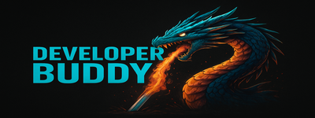

Recent changes
rnt changes
Last updated: 03/23/2026
For Windows 10/11
Default is powershell multicore search to database then hybrid analysis.
With windows subsystem of linux support for the find command.
Index your system to detect unwanted changes or alterations. The system index is stored in the sys table and is checked while doing hybrid analysis. If a file is changed that isnt regularly changed and or if it was a system file can be shown. As well you can scan the index or sys table indepenently to get a reading on the system.
The results from a scan, also known as the postop, are appended to the difference file on the desktop or a default one is made.
Find information about the types of files and their changes while doing a file search. What are the cache files or system files to find out what is important and isnt.
There is a built in filter in filter.py that can be edited that will filter out files from the searches using the filtered button/option. This filter has been customized for windows to make searching for files easier. Careful attention is paid to not filter out anything valuable as less is more in this case.
All searches will store all files in the database and then apply the filter so no data is missed.
Want to find out what files an application installs? Use an mft search to index the system and then get a Mft difference file sometime later. By only showing the needed fields: Timestamp and Filepath the information is quickly provided.
Mft tools
The search requires one of following placed in /save-changesnew/bin
icat
https://github.com/sleuthkit/sleuthkit/releases/download/sleuthkit-4.14.0/sleuthkit-4.14.0-win32.zip
ntfstools x64
thewhiteninja/ntfstool: Forensics tool for NTFS (parser, mft, bitlocker, deleted files)
A system mft can be saved or a mft can be imported and exported to .csv using the import feature.
If you discover and bugs or have any feedback or requests/suggestions feel free to msg at:
colby.saigeon@gmail.com
dreadwrr - on porteus forums

'Alef', 'Amiri', 'Amiri Quran', 'Arial', 'Bahnschrift', 'Caladea', 'Calibri', 'Cambria', 'Cambria Math', 'Candara', 'Carlito', 'Cascadia Code', 'Cascadia Mono', 'Comic Sans MS', 'Consolas', 'Constantia', 'Corbel', 'Courier', 'Courier New', 'David CLM', 'David Libre', 'DejaVu Math TeX Gyre', 'DejaVu Sans', 'DejaVu Sans Mono', 'DejaVu Serif', 'Ebrima', 'Fixedsys', 'Frank Ruehl CLM', 'Frank Ruhl Hofshi', 'Franklin Gothic', 'Gabriola', 'Gadugi', 'Gentium Basic', 'Gentium Book Basic', 'Georgia', 'Impact', 'Ink Free', 'Javanese Text', 'Leelawadee UI', 'Liberation Mono', 'Liberation Sans', 'Liberation Serif', 'Linux Biolinum G', 'Linux Libertine Display G', 'Linux Libertine G', 'Lucida Console', 'Lucida Sans Unicode', 'Malgun Gothic', 'Marlett', 'Microsoft Himalaya', 'Microsoft JhengHei', 'Microsoft JhengHei UI', 'Microsoft New Tai Lue', 'Microsoft PhagsPa', 'Microsoft Sans Serif', 'Microsoft Tai Le', 'Microsoft YaHei', 'Microsoft YaHei UI', 'Microsoft Yi Baiti', 'MingLiU-ExtB', 'MingLiU_HKSCS-ExtB', 'MingLiU_MSCS-ExtB', 'Miriam CLM', 'Miriam Libre', 'Miriam Mono CLM', 'Modern', 'Mongolian Baiti', 'MS Gothic', 'MS PGothic', 'MS Sans Serif', 'MS Serif', 'MS UI Gothic', 'MV Boli', 'Myanmar Text', 'Nachlieli CLM', 'Nirmala Text', 'Nirmala UI', 'Noto Kufi Arabic', 'Noto Naskh Arabic', 'Noto Sans', 'Noto Sans Arabic', 'Noto Sans Armenian', 'Noto Sans Georgian', 'Noto Sans Hebrew', 'Noto Sans Lao', 'Noto Sans Lisu', 'Noto Serif', 'Noto Serif Armenian', 'Noto Serif Georgian', 'Noto Serif Hebrew', 'Noto Serif Lao', 'NSimSun', 'OpenSymbol', 'Palatino Linotype', 'PMingLiU-ExtB', 'Reem Kufi', 'Roman', 'Rubik', 'Sans Serif Collection', 'Scheherazade', 'Script', 'Segoe Fluent Icons', 'Segoe MDL2 Assets', 'Segoe Print', 'Segoe Script', 'Segoe UI', 'Segoe UI Emoji', 'Segoe UI Historic', 'Segoe UI Symbol', 'Segoe UI Variable', 'SimSun', 'SimSun-ExtB', 'SimSun-ExtG', 'Sitka', 'Small Fonts', 'Sylfaen', 'Symbol', 'System', 'Tahoma', 'Terminal', 'Times New Roman', 'Trebuchet MS', 'Unispace', 'Verdana', 'Webdings', 'Wingdings', 'Yu Gothic', 'Yu Gothic UI'